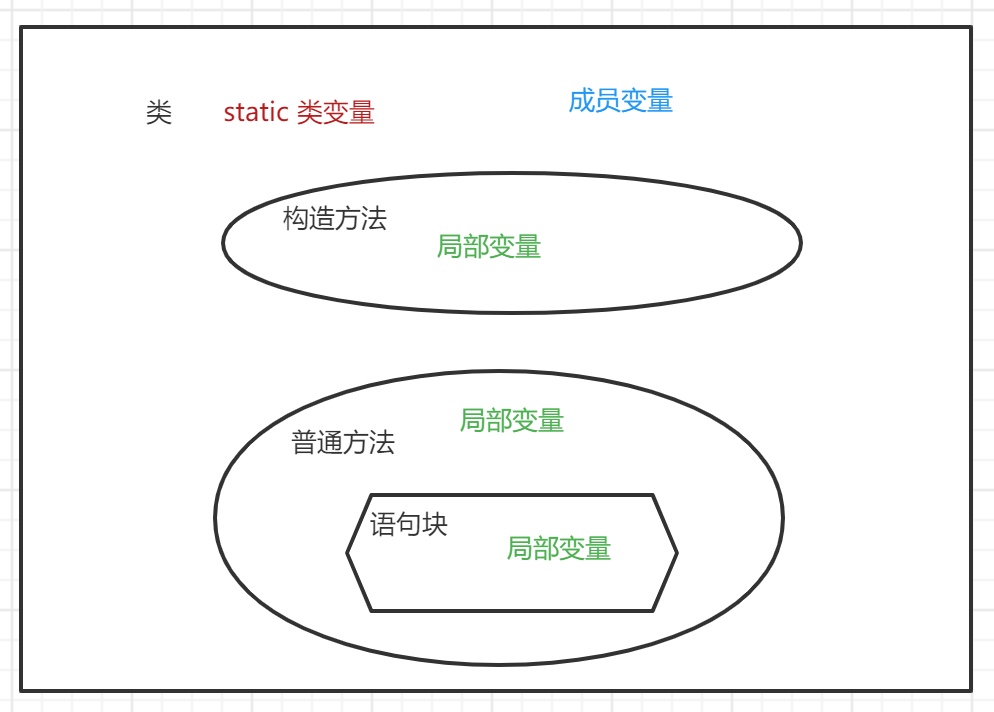
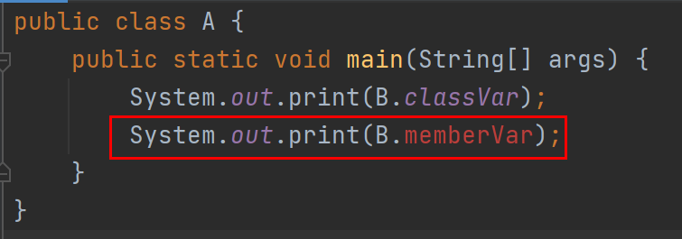

4 Java八大基本数据类型与三大变量类型¶

八大基本数据类型¶
Java内置了8个基本数据类型，它们分别是byte、short、int、long、float、double、boolean、char。
每种基本数据类型都有相应的包装类：Byte、Short、Integer、Long、Float、Double、Character。包装类提供了面向对象的实现，比如二进制位数（
Integer.SIZE）、最小值（Integer.MIN_VALUE）、最大值（Integer.MAX_VALUE）等。
byte
8位整数，默认值是0，byte类型主要用在大型数组中节约空间，因为它占用的空间只有int类型的四分之一。
short
16位整数，默认值是0。跟byte类型用法类似，占用空间是int类型的二分之一。
int
32位整数，默认值是0。最常用的整数类型。
long
64位整数，默认值是0L。超出int范围的整数需要使用long类型。
float
32位浮点数，默认值是 0.0f。float类型用来表示小数。
double
64位浮点数，默认值是0.0d。浮点数的默认类似是double类型。
boolean
1位真假值（true/false），默认值是false。
char
16位Unicode字符，默认值是u0000。用来存储任何单一字符。
第九种基本数据类型void¶
实际上，Java还有第九种基本数据类型void，我们经常在方法返回值那里见到它，它的包装类是java.lang.Void。
三大变量类型¶
Java中的一个类可以包含3种类型的变量：局部变量、成员变量、类变量。它们的定义位置如下图所示：

局部变量
局部变量是在方法、构造方法或者语句块中定义的变量。变量声明和初始化都是在方法中，方法结束后，变量就会自动销毁。
成员变量
成员变量是在类中，方法体之外定义的变量。变量在创建对象的时候实例化，可以被类中方法、构造方法和特定的语句块访问。
类变量
类变量跟成员变量定义的位置相同，只不过必须声明为static类型。
成员变量和类变量在使用上有个明显的区别是：类变量可以直接通过类名.变量形式进行访问，成员变量则不能。比如：
public class B {
static int classVar = 1; // 类变量
int memberVar = 2; // 成员变量
}

成员变量在写代码时IDEA就已经报错了。